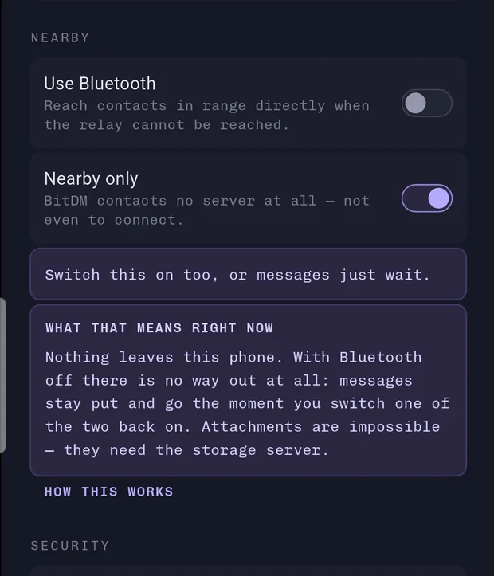
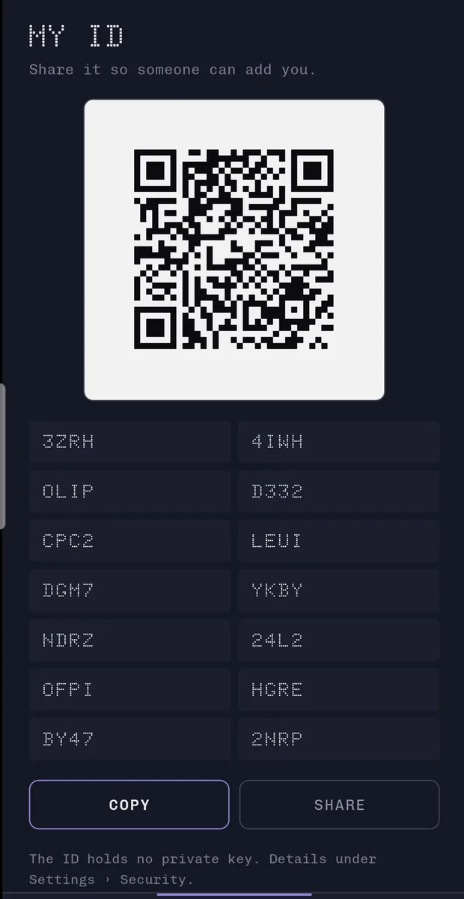

Kein Konto dahinter. Diese Zeichenkette ist der Schlüssel. Die App erzeugt ihn auf dem Gerät, in einer Zehntelsekunde, ohne einen Server zu fragen. There is no account behind it: this string is the key. The app generates it on the device, in a fraction of a second, without asking any server.
Deine Identität
passt in
56 Zeichen
Your identity
fits into
56 characters
Die meisten Messenger fragen zuerst nach deiner Telefonnummer. BitDM fragt nach gar nichts. Beim ersten Start erzeugt die App ein Schlüsselpaar. Die Adresse oben ist der öffentliche Teil davon, lesbar kodiert und mit einer Prüfsumme gegen Vertipper.
Das hat eine Folge, die man leicht überliest: ein Server kann dir keinen falschen Schlüssel unterschieben. Er müsste dafür die Adresse ändern, und die hast du bereits.
Verschlüsselt wird mit libsignal — derselben Bibliothek, die Signal benutzt, mit AES 256 Bit für jede einzelne Nachricht. Was genau darin steckt, steht weiter unten Zeile für Zeile.
Most messengers ask for your phone number first. BitDM asks for nothing at all. On first launch the app generates a key pair. The address above is its public half, readably encoded and carrying a checksum against typos.
That has a consequence which is easy to miss: a server cannot slip you the wrong key. It would have to change the address, and you already have that.
The encryption is libsignal — the same library Signal uses, with AES 256-bit for every single message. What exactly is inside it is spelled out line by line further down.
Version 1.5.1, 66 MB, für arm64 und arm32. Android wird beim Installieren warnen — es warnt bei jeder App, deren Zertifikat Google nicht kennt, unabhängig davon, was in der Datei steht. Was in dieser steht, lässt sich an den zwei Werten darunter nachprüfen.
Version 1.5.1, 66 MB, for arm64 and arm32. Android will warn you when installing — it warns about every app whose certificate Google does not know, regardless of what the file contains. What this one contains can be checked against the two values below.
- Diese DateiThis file
62027fc7cb2aceacd74d7150dcca1ff937861c30cc420fcd35f9055dc20ee72c—sha256sum bitdm-1.5.1.apk- Der Schlüssel, mit dem sie signiert ist The key it is signed with
e325b01c08a1a679b6aac20ac9ae3ee255591b46b37dd92717f97085acc22063—apksigner verify --print-certs bitdm-1.5.1.apk
Der erste Wert gilt nur für diese Datei, der zweite für alle künftigen Versionen: Android nimmt ein Update nur an, wenn es mit demselben Schlüssel signiert ist. Ändert sich dieser Wert je, ist es nicht mehr dieselbe App. The first value covers only this file; the second covers every future version: Android accepts an update only if it carries the same signing key. If that second value ever changes, it is no longer the same app.
Die Veröffentlichung ist vorbereitet, aber noch nicht erfolgt. Sobald die Prüfung durch ist, steht der Link hier.
Publication is prepared but has not happened yet. The link will appear here once review is through.
Der quelloffene App-Katalog. Dort baut nicht der Entwickler die App, sondern F-Droid selbst — aus dem Quellcode, den du auch lesen kannst. Genau deshalb wollen wir dort hin.
The open-source app catalogue. There the app is not built by the developer but by F-Droid itself, from the source you can read too. That is exactly why we want to be there.
Version 1.5.1 für x64, ein Zip mit 15 MB, entpackt 35 MB.
Einen Installer gibt es nicht: entpacken, bitdm.exe starten,
fertig. Das Skript für einen richtigen Installer liegt im Quellcode unter
windows/bitdm.iss, ausgeführt hat es noch niemand.
Version 1.5.1 for x64, a 15 MB zip, 35 MB unpacked. There is
no installer: unpack it, start bitdm.exe, done. The script
for a proper installer sits in the source at
windows/bitdm.iss, but nobody has run it yet.
Windows wird beim Start warnen, und zwar aus demselben Grund wie Android bei der APK: die Datei ist nicht signiert. Ein Authenticode-Zertifikat kostet jährlich Geld, und der Android-Schlüssel taugt dafür nicht. SmartScreen prüft ohnehin nicht den Inhalt, sondern wie bekannt eine Signatur ist. Den Inhalt prüft der Wert darunter.
Windows will warn you when you start it, for the same reason Android warns about the APK: the file is not signed. An Authenticode certificate costs money every year, and the Android key is no substitute. SmartScreen does not check the contents anyway, it checks how well known a signature is. The contents are what the value below covers.
- Diese DateiThis file
08299da651e3d39e83c8c368727a9043795acd2174f6900be312527ff5187782—certutil -hashfile bitdm-windows-1.5.1.zip SHA256
Hier steht ein Wert und nicht zwei: der gilt nur für diese eine Datei. Einen zweiten, der über alle künftigen Versionen gleich bleibt, gibt es unter Windows erst mit einer Signatur — auf Android leistet das der Schlüssel im Kasten oben. Was auf dem Desktop anders läuft als am Telefon, steht weiter unten. One value here, not two: it covers this one file only. A second one that stays the same across future versions needs a signature on Windows — on Android the signing key above does that job. What behaves differently on the desktop is spelled out further down.
Der Linux-Teil ist im Quellcode enthalten, gebaut wurde er
hier aber noch nie — es gibt kein Verzeichnis build/linux
und darum auch nichts zum Herunterladen. Selbst bauen geht:
flutter build linux --release, dazu die
Entwicklungspakete von GTK 3 und libsecret. Gestartet hat das Ergebnis
niemand, die Angaben zu Windows gelten dafür also nicht. Die
Schritt-für-Schritt-Anleitung samt Paketnamen je Distribution liegt im
Quellcode unter docs/LINUX.md.
The Linux part is in the source, but it has never been built
here — there is no build/linux directory and therefore
nothing to download. Building it yourself works:
flutter build linux --release, plus the development
packages for GTK 3 and libsecret. Nobody has launched the result, so
what is said about Windows does not carry over. The step-by-step guide
with package names per distribution is in the source at
docs/LINUX.md.
Im Quellcode gibt es kein macos-Verzeichnis.
Flutter würde eines anlegen, angelegt hat es niemand: nicht gebaut, nicht
gestartet, nicht geprüft. Zum Prüfen fehlt in diesem Projekt ein Mac, und
ohne Gerät zum Nachsehen wäre jede Angabe dazu geraten.
There is no macos directory in the source.
Flutter would create one, but nobody has: not built, not launched, not
checked. This project has no Mac to check it on, and without a device to
look at, any statement about it would be guesswork.
In Arbeit. Der Bau läuft durch, im Browser bleibt die Seite
aber weiß — der Netzcode der App steckt auf dart:io, das es
im Browser nicht gibt, und die Kanäle zum Betriebssystem haben dort keine
Gegenseite. Ein Link kommt hierher, sobald die Seite etwas anzeigt; bis
dahin führte er auf ein weißes Feld.
In progress. The build completes, but in the browser the page
stays blank — the app's networking sits on dart:io, which
browsers do not have, and the channels to the operating system have no
counterpart there. A link will appear here as soon as the page shows
something; until then it would lead to a blank panel.
Eine Zeile genügt. Wir führen keine Liste. Deine Mail liegt in einem Postfach und sonst nirgends.
One line is enough. We keep no mailing list; your address sits in a mailbox and nowhere else.
Was der Server sieht What the server sees
Ende-zu-Ende-Verschlüsselung schützt den Inhalt. Sie schützt nicht, dass du geschrieben hast. Wer das verschweigt, verkauft Sicherheit, statt sie zu liefern — deshalb steht es hier und nicht im Kleingedruckten.
End-to-end encryption protects the content. It does not protect the fact that you wrote. Hiding that means selling security instead of delivering it, so it stands here rather than in the fine print.
- Inhalt der NachrichtMessage contentunsichtbarinvisible
- Anzeigename deiner KontakteYour contacts' display namesunsichtbarinvisible
- Absender- und EmpfängeradresseSender and recipient addresssichtbarvisible
- Zeitpunkt und ungefähre GrößeTime and rough sizesichtbarvisible
- Die genaue Länge einer NachrichtThe exact length of a messageunsichtbarinvisible
- Wer gerade verbunden istWho is currently connectedsichtbarvisible
Wenn es keinen Server gibt When there is no server
Zwei Telefone, die nebeneinander liegen, brauchen niemanden dazwischen. BitDM findet den anderen über Bluetooth und schickt die Nachricht direkt — kein WLAN, keine Mobilfunkdaten, kein Rechenzentrum. Sie tragen dann ein Zeichen: direkt.
Two phones lying next to each other need nobody in between. BitDM finds the other over Bluetooth and delivers the message directly — no Wi-Fi, no mobile data, no data centre. Such messages carry a mark: direct.
Am 29. Juli 2026 auf zwei Geräten gemessen, beide im Flugmodus für Daten: 325 Byte in 1,35 Sekunden.
Measured on two devices on 29 July 2026, both with data switched off: 325 bytes in 1.35 seconds.
Das Schwierige daran ist nicht das Senden, sondern das Finden. Ein Gerät, das seine Adresse in die Gegend ruft, damit Freunde es erkennen, verrät sie auch allen anderen — und eine Adresse, die man über Tage wiedererkennt, ist ein Bewegungsprofil. The hard part is not the sending, it is the finding. A device broadcasting its address so friends can spot it also hands that address to everyone else — and an address you can recognise across days is a movement profile.
BitDM sendet darum keine Adresse aus, sondern Leuchtfeuer: sechs Byte je Kontakt, berechnet aus dem gemeinsamen Geheimnis und dem laufenden Viertelstundenfenster. Wer das Geheimnis hat, erkennt daran seinen Kontakt. Wer es nicht hat, sieht sechs Byte Rauschen, die sich alle fünfzehn Minuten ändern. So BitDM broadcasts no address. It broadcasts beacons: six bytes per contact, computed from the shared secret and the current fifteen-minute window. Whoever holds the secret recognises their contact in it. Whoever does not sees six bytes of noise that change every fifteen minutes.
Es gibt bewusst keine Anzeige, wer gerade in Reichweite ist. Am Zeichen an einer Nachricht lässt sich ablesen, wie sie gegangen ist; wer da war, sagt niemand. There is deliberately no display of who is nearby. The mark on a message tells you how it travelled; who was around is nobody's business.


Braucht Android 12 oder neuer und Bluetooth 5 auf beiden Geräten. Die erste Nachricht an einen ganz neuen Kontakt tauscht die Schlüssel ebenfalls über Funk — dazu muss die Gegenseite kurz in Reichweite sein. Anhänge gehen diesen Weg nicht. Needs Android 12 or newer and Bluetooth 5 on both devices. The first message to a brand new contact exchanges keys over the air as well, so the other side has to be in range for a moment. Attachments do not take this route.
Wie eine Nachricht entsteht How a message comes about
Signal-Protokoll: X3DH baut die Sitzung auf, der Double Ratchet erneuert die Schlüssel bei jeder Nachricht. Wer sich heute einen Schlüssel beschafft, kann damit nicht nachlesen, was gestern geschrieben wurde.
Signal protocol: X3DH sets up the session, the Double Ratchet renews keys with every message. Obtaining a key today does not unlock what was written yesterday.
Adresse eintragenEnter address
Du fügst die 56 Zeichen deines Gegenübers ein. Die Prüfsumme fängt Vertipper ab, bevor irgendetwas gesendet wird.
You paste the other side's 56 characters. The checksum catches typos before anything is sent.
Sitzung aufbauenEstablish session
Die App holt ein Schlüsselpaket und rechnet daraus ein gemeinsames Geheimnis aus, auch wenn das Gegenüber gerade offline ist.
The app fetches a key bundle and derives a shared secret from it, even while the other side is offline.
Schlüssel weiterdrehenRatchet forward
Jede Nachricht bekommt ihren eigenen Schlüssel. Der vorherige wird verworfen und ist nicht wiederherstellbar.
Every message gets its own key. The previous one is discarded and cannot be recovered.
NachprüfenVerify
Eine 60-stellige Sicherheitsnummer, die beide Seiten vergleichen können. Stimmt sie, sitzt niemand dazwischen.
A 60-digit safety number both sides can compare. If it matches, nobody is sitting in between.
Zwölf Wörter, einmal notiert Twelve words, written down once
Ohne Konto gibt es niemanden, der dich zurücklassen könnte. Deshalb bekommst du beim ersten Start zwölf Wörter. Sie sind der einzige Weg zurück; einen zweiten haben auch wir nicht.
Without an account, there is nobody who could let you back in. So on first launch you get twelve words. They are the only way back; we do not have a second one either.
Womit genau With what, exactly
Die Kryptographie stammt aus libsignal, der Bibliothek hinter Signal. Die riskanten Teile sind damit die, an denen schon andere gerechnet und geprüft haben.
The cryptography comes from libsignal, the library behind Signal. The risky parts are therefore the ones others have already worked through and reviewed.
- SitzungsaufbauSession setup
- X3DH über Curve25519. Funktioniert auch, wenn das Gegenüber offline ist. X3DH over Curve25519. Works even while the other side is offline.
- Laufendes GesprächOngoing conversation
- Double Ratchet. Jede Nachricht bekommt einen eigenen Schlüssel. Double Ratchet. Every message gets its own key.
- Die Nachricht selbstThe message itself
- AES mit 256 Bit Schlüssellänge im CBC-Betrieb, beglaubigt mit HMAC-SHA256 — Signals eigene Konstruktion. Der Schlüssel ist 32 Byte lang und gilt für genau eine Nachricht. AES with a 256-bit key in CBC mode, authenticated with HMAC-SHA256 — Signal's own construction. The key is 32 bytes long and covers exactly one message.
- UnterschriftenSignatures
- XEdDSA: Ed25519-Signaturen mit demselben Curve25519-Schlüssel, der auch die Adresse ist. XEdDSA: Ed25519 signatures using the same Curve25519 key that is also the address.
- Länge verschleiernLength hiding
- Jede Nachricht wird auf ein Vielfaches von 256 Byte aufgefüllt. Ein „ja“ und ein „nein“ sehen auf der Leitung gleich aus, und ein kurzer Satz wie ein langer. Every message is padded to a multiple of 256 bytes. A “yes” and a “no” look identical on the wire, and so do a short sentence and a long one.
- Aus den zwölf WörternFrom the twelve words
- BIP39 (PBKDF2-HMAC-SHA512, 2048 Runden) ergibt einen Seed; HKDF-SHA256 zieht daraus getrennte Schlüssel für Identität und Datenbank. Die Wörter sind das Original, nicht eine Abschrift des Schlüssels. BIP39 (PBKDF2-HMAC-SHA512, 2048 rounds) yields a seed; HKDF-SHA256 derives separate keys for identity and database from it. The words are the original, not a transcript of the key.
- Die AdresseThe address
- 32 Byte öffentlicher Schlüssel plus 3 Byte SHA-256-Prüfsumme, in Base32 — zusammen 56 Zeichen. Wer sie hat, hat den Schlüssel selbst. 32 bytes of public key plus 3 bytes of SHA-256 checksum, in Base32 — 56 characters in all. Whoever has it has the key itself.
Wenn das Telefon in fremde Hände fällt If the phone falls into the wrong hands
Ende-zu-Ende-Verschlüsselung schützt den Weg. Was auf dem Gerät liegt, ist eine zweite Frage — und sie wird oft gar nicht gestellt.
End-to-end encryption protects the path. What sits on the device is a second question — and one that often goes unasked.
- Die DatenbankThe database
- Als ganze Datei mit ChaCha20-Poly1305 verschlüsselt (SQLite3MultipleCiphers). Wer sie in die Hand bekommt, sieht nicht einmal, wie viele Kontakte es gibt. Encrypted as a whole file with ChaCha20-Poly1305 (SQLite3MultipleCiphers). Whoever obtains it cannot even tell how many contacts there are.
- App-SperreApp lock
- AES mit 256 Bit im GCM-Betrieb. Beim App-Passwort entsteht der Schlüssel über Argon2id mit 19 MiB Speicher und 2 Durchgängen — die Empfehlung des OWASP. Raten kostet damit Speicher und Zeit, nicht nur Rechenschritte. AES with a 256-bit key in GCM mode. With the app password the key comes from Argon2id using 19 MiB of memory and 2 passes — the OWASP recommendation. Guessing therefore costs memory and time, not just cycles.
- Vier Wege hineinFour ways in
- Fingerabdruck, Gerätesperre, App-Passwort — oder ein Sicherheitsschlüssel per NFC oder Kabel (CTAP2
hmac-secret, etwa YubiKey). Ohne den Stick geht die App dann nicht auf, auch nicht mit dem richtigen Passwort. Fingerprint, device lock, app password — or a security key over NFC or cable (CTAP2hmac-secret, e.g. YubiKey). Without the key the app stays shut, correct password or not. - Alles löschenWipe
- Der Schlüssel der Datenbank stammt aus den zwölf Wörtern. Sind sie gelöscht, ist die Datei dauerhaft unlesbar — auch für uns, auch wenn die Bytes im Flash-Speicher überleben. The database key comes from the twelve words. Delete them and the file is permanently unreadable — to us as well, even if the bytes survive in flash.
Große Dateien, ohne großen Server Large files, without a large server
Bis zu 5 GB je Datei. Sie geht nicht durch den Relay — der ist für kurze Nachrichten gebaut. Sie liegt verschlüsselt in einem eigenen Zwischenlager, in Stücken, und verschwindet nach 14 Tagen von selbst.
Up to 5 GB per file. It does not pass through the relay — that one is built for short messages. It rests encrypted in a separate holding store, in pieces, and disappears by itself after 14 days.
In Stücke teilenSplit into pieces
16 MiB je Stück. Reißt die Verbindung ab — auf Mobilfunk bei drei Gigabyte der Normalfall —, kostet das ein Stück und nicht die ganze Datei.
16 MiB each. If the connection drops — the normal case for three gigabytes over mobile — it costs one piece, not the whole file.
Je Stück ein SchlüsselOne key per piece
AES mit 256 Bit im GCM-Betrieb, und jedes Stück bekommt einen eigenen Zufallsschlüssel. Mit einem Schlüssel für die ganze Datei müsste ein Zähler über alle Stücke sauber geführt werden — über Abbrüche und Wiederaufnahmen hinweg —, und ein Fehler dabei bricht GCM vollständig.
AES with a 256-bit key in GCM mode, and every piece gets its own random key. With one key for the whole file a counter would have to be tracked across all pieces — across aborts and resumptions —, and a single slip there breaks GCM completely.
Die Nummer mitbeglaubigenAuthenticate the number
Fälschen kann der Speicher nichts. Vertauschen schon — unter der Kennung von Stück 3 die Bytes von Stück 5. Deshalb steckt die Stücknummer im beglaubigten Zusatz; ein vertauschtes Stück geht dann gar nicht mehr auf.
The store cannot forge anything. It could swap, though — serving piece 5's bytes under piece 3's identifier. So the piece number sits in the authenticated data; a swapped piece then fails to open at all.
Schlüssel gehen andersKeys travel elsewhere
Die Anleitung — wo die Stücke liegen und womit sie aufgehen — reist als gewöhnliche Nachricht durch die Signal-Sitzung. Der Speicher bekommt die Schlüssel also nie zu sehen; er kennt Größe und Zeitpunkt, mehr nicht.
The recipe — where the pieces are and what opens them — travels as an ordinary message through the Signal session. The store therefore never sees the keys; it knows size and timing, nothing else.
Am PC fehlen drei Dinge Three things are missing on the PC
Ein Teil von BitDM steckt vollständig in Android-Code und hat auf Windows keine Gegenseite: der Nahbereich über Bluetooth, der Weckdienst für Push und jede Sperre außer dem App-Passwort. Am PC werden sie deshalb gar nicht erst angeboten. Das ist eine Entscheidung und keine halbe Arbeit — lieber etwas weglassen, als es anbieten und daran scheitern.
Part of BitDM lives entirely in Android code and has no counterpart on Windows: the nearby exchange over Bluetooth, the push wake-up, and every lock factor except the app password. On the PC they are not offered at all. That is a decision rather than unfinished work — better to leave something out than to offer it and fail at it.
Wie es aussieht, wenn man es anders macht, stand am 30. Juli 2026 kurz auf dem Bildschirm: der erste Windows-Bau bot vier Sperren an, von denen drei nicht funktionieren konnten. Ein Druck darauf endete in einer Fehlermeldung des Systems, und eine davon erklärte auf einem Schreibtisch-PC ernsthaft „the PIN, pattern or password of this phone“. Eine Liste, in der die Hälfte der Einträge nichts tut, lässt an der anderen Hälfte genauso zweifeln. What the other approach looks like was briefly on screen on 30 July 2026: the first Windows build offered four locks, three of which could not work. Pressing them ended in a system error, and one of them seriously explained “the PIN, pattern or password of this phone” on a desktop computer. A list where half the entries do nothing makes a reader doubt the other half just as much.
- Schreiben, empfangen, VerlaufWriting, receiving, historyauch am PCon the PC too
- Verschlüsselte Datenbank auf der PlatteEncrypted database on diskauch am PCon the PC too
- App-Passwort als SperreApp password as a lockauch am PCon the PC too
- Fingerabdruck, Gerätesperre, SicherheitsschlüsselFingerprint, device lock, security keynur AndroidAndroid only
- Push als WeckdienstPush as a wake-up servicenur AndroidAndroid only
- Nahbereich über BluetoothNearby exchange over Bluetoothnur AndroidAndroid only
- Einen QR-Code scannenScanning a QR codenur AndroidAndroid only
- Anhänge aussuchen und öffnenChoosing and opening attachmentsnur AndroidAndroid only
Ohne Push bleibt am PC die Verbindung offen, solange die App läuft — ein Weckdienst von außen wird dort nicht gebraucht. Beim Anhang ist die Lage unschöner: der Knopf ist noch zu sehen, und am PC öffnet sich beim Druck darauf kein Auswahlfenster. Solange das so ist, steht es hier. Without push, the connection on the PC stays open as long as the app runs, so no external wake-up is needed there. Attachments are the uglier case: the button is still visible, and on the PC pressing it opens no file dialog. As long as that is true, it is stated here.
Was BitDM nicht kann What BitDM cannot do
Ein Typenschild sagt, was ein Gerät aushält und was nicht. Diese Liste wächst mit, statt später still zu verschwinden.
A rating plate states what a device withstands and what it does not. This list grows with the product instead of quietly disappearing.
- MetadatenMetadata
- Der Relay sieht, wer wann mit wem schreibt; daran ändert die Verschlüsselung nichts. The relay sees who writes to whom and when, and encryption does not change that.
- GeräteDevices
- Ein Gerät je Identität. Wiederherstellung auf einem zweiten legt das erste still. One device per identity. Restoring on a second one retires the first.
- UmfangScope
- Einzelchats mit Text und Anhängen bis 5 GB. Keine Gruppen, keine Anrufe. One-to-one chats with text and attachments up to 5 GB. No groups, no calls.
- VerlustLoss
- Sind die zwölf Wörter weg, ist die Identität weg. Es gibt kein Zurücksetzen und keine Wiederherstellung per Mail. Twelve words gone means identity gone. No reset, no recovery by email.
- PrüfungAudit
- Kein externes Sicherheitsaudit. Der Quellcode liegt offen und macht ein Audit möglich, ersetzt aber keines. No external security audit. The source is open, which makes an audit possible without replacing one.
- ReifeMaturity
- Vorabversion. Noch nicht veröffentlicht, noch nicht im Alltag erprobt. Pre-release. Not published yet, not proven in daily use yet.
Der Quellcode liegt offen The source is open
Ein Sicherheitsversprechen, das niemand nachprüfen kann, ist wertlos. Der vollständige Quellcode steht unter GPL-3.0 offen: App, Server und Tests.
A security promise nobody can check is worthless. The complete source is open under GPL-3.0: app, server and tests.
Schlüssellänge überall, wo AES benutzt wird: Nachrichten, App-Sperre, Anhänge. 256 Bit — 32 Byte, nachlesbar im Quelltext.
Key length everywhere AES is used: messages, app lock, attachments. 256 bits — 32 bytes, verifiable in the source.
Quelloffen. Wer die App verteilt, muss den Quellcode mitliefern.
Open source. Anyone distributing the app must ship the source.
Offizielle BIP39-Testvektoren, gegen die die Ableitung der zwölf Wörter geprüft ist.
Official BIP39 test vectors the twelve-word derivation is checked against.
Zeichen je Adresse, mit Prüfsumme. Jeder einzelne Vertipper fällt auf.
Characters per address, with a checksum. Every single typo is caught.
Anfragen an Dritte. Die App lädt weder Schriften noch Zählpixel nach, und diese Seite ebenso wenig.
Third-party requests. The app loads neither fonts nor trackers, and the same holds for this page.
Byte je Block, auf den jede Nachricht aufgefüllt wird. Deshalb sieht ein „ja“ auf der Leitung aus wie ein Absatz.
Bytes per block every message is padded to. That is why a “yes” looks like a paragraph on the wire.
Größte Datei je Anhang — in 32-MiB-Stücken, jedes mit eigenem Schlüssel.
Largest file per attachment — in 32 MiB pieces, each with its own key.